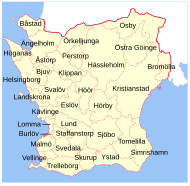

Arbetsmarknadskartan
Skåne
Källor: Arbetsförmedlingen & Ekonomifakta · senast kända siffror 2025–2026
Riket
6,5 %
Skåne
8,4 %
Högst i landet
Perstorp 13,1 %
Danmark (granne)
~2,6 %

Under 7 % — lägre än rikssnittet
7–10 %
Över 10 %
Klicka på en kommun för detaljer
Laddar…